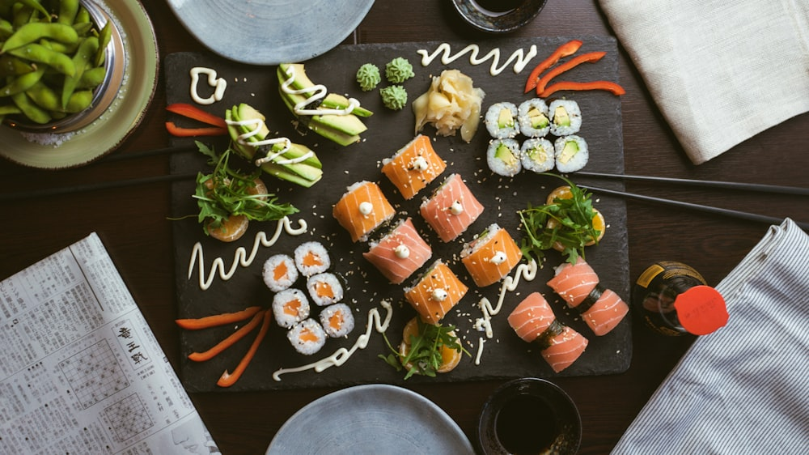

Craft Sushi Bar
Specialty Sushi Rolls, Sashimi & Poke
Fresh sushi-grade Atlantic salmon, yellowfin tuna, sweet eel, and spicy crab rolled to order at 440 S Church St.
Fresh & Flame-Kissed
Chef-Inspired Roll Creations
Whether craving warm baked rolls dripping in spicy crab and unagi sauce or cool fresh slices of sashimi over seasoned sushi rice, our sushi masters craft every piece with precision.
- The Volcano Roll: Baked spicy crab and bay scallops over a California roll with tempura crunch.
- Queen City Roll: Crispy shrimp tempura and cream cheese topped with spicy tuna and avocado.
- Godzilla Crunch Roll: Panko-crusted deep fried roll with spicy salmon, cream cheese, and unagi drizzle.

Signature Roll Lineup
Volcano Roll
Baked spicy crab, scallops, eel sauce, spicy mayo.
$14.50Queen City Roll
Shrimp tempura, cream cheese, spicy tuna, avocado.
$14.95Dragon Roll
Eel and cucumber inside, draped with ripe avocado.
$13.95Rainbow Roll
Tuna, salmon, yellowtail, and avocado over California roll.
$14.50